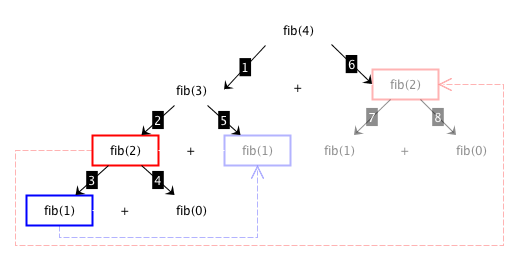

These lecture notes introduce the notion of dynamic programming algorithms with the implementation of one algorithm of this kind, which calculates Fibonacci numbers. The historic hero introduced in these notes is Leonardo of Pisa, a.k.a. Fibonacci, who was one of the most important and prominent mathematicians of the Middle Ages.
Copyright notice. This work is licensed under a Creative Commons Attribution 4.0 International License. You are free to share (i.e. copy and redistribute the material in any medium or format) and adapt (e.g. remix, transform, and build upon the material) for any purpose, even commercially, under the following terms: attribution, i.e. you must give appropriate credit, provide a link to the license, and indicate if changes were made. You may do so in any reasonable manner, but not in any way that suggests the licensor endorses you or your use. The licensor cannot revoke these freedoms as long as you follow the license terms.
Historic hero: Fibonacci
Leonardo of Pisa, a.k.a. Fibonacci (depicted in ), was a mathematician who first introduced in Europe the Hindu-Arabic number system, which is the numeral system that is commonly used worldwide even today. This introduction was possible thanks to the publication of his book in 1202, Liber Abaci (Book of Calculation in English) , which describes how to use such numeral system for addressing situations related to commerce, and for solving generic mathematical problems.
One of the main contributions of Fibonacci in his book was a small note about a particular infinite sequence of numbers, named after him, that described ideally the number of male-female pairs of rabbits at a given month. The Fibonacci sequence, and the numbers it contains (i.e. 1 1 2 3 5 8 13 21 34 55 ...), has very peculiar properties that have been studied in the past by mathematicians and also historians of science. It is calculated with a very simple (and recursive!) approach: the Fibonacci number at a certain month n is equal to the sum between the Fibonacci number at month n-1 and that one at month n-2, as shown in – where fib(0) and fib(1) are always equal to 0 and 1 respectively.
One of the most famous property (actually, it could be even classified as a proper mystery), that Fibonacci did not mention it its book, is the relation that exists between the Fibonacci sequence and the golden ratio. Mathematically speaking, two quantities are in the golden ratio when their ratio is the same as the ration of their some to the larger quantity. Thus it can be defined by , where the quantity a is greater than the quantity b.
While this seems a quite simple ratio at a first sight, it is actually defined by an irrational number. In addition, even if this very number sounds to be a quite abstract and a purely-mathematical notion, it has been found to be used and observed in several different domains, such as architecture (e.g. the Pantheon in Athens), arts (e.g. Leonardo's drawings in De divina proportione), and nature (e.g. the arrangement of leaves in plants).
The Fibonacci sequence is somehow closely related to the golden ratio. In fact, taken a number in the sequence and diving it by the previous one in the same sequence will return an approximation of the golden ratio Φ, and the higher the numbers, the more precise is the value:
5 / 3 = 1.66666...
8 / 5 = 1.6
13 / 8 = 1.625
21 / 13 = 1.61538...
34 / 21 = 1.61904...
55 / 34 = 1.61764...
...
Remembering solutions to sub-problems
In the previous lecture, we have introduced how the divide and conquer algorithm generally works. They are mainly based on four steps, i.e. the handling of one or more base cases and divide, conquer (i.e. the recursive action), and combine steps, which actually are the heart of the algorithm. We have explicitly said that such approach is, in the most cases, more efficient than the simpler brute force approach, at least for solving computational problems that can be split in two or more smaller problems of the same type.
However, some computational problems present even an additional characteristics. Sometimes, not only they can be split into sub-problems, but also some of these sub-problems are repeated during the execution. This can even happen when we have to sort books. For instance, suppose we have the following list of books with six items to sort: list(["Coraline", "American Gods", "Neverwhere", "Neverwhere", "American Gods", "Coraline"]). This is a quite peculiar list, since it contains two copies of the same book. Applying the divide step of the merge sort will return two sublists that contains, basically, different copies of the same books, even if in different order: the left list will be list(["Coraline", "American Gods", "Neverwhere"]) while the right one will be list(["Neverwhere", "American Gods", "Coraline"]). However, even if the order between the books in the two sublists is different, we are pretty sure that the final result, i.e. the two lists ordered, will be exactly the same.
Even in this case, in the merge sort algorithm we call recursively the algorithm twice (in the conquer step), even if we could, in principle, run it just once, i.e. on the left list and then to reuse the positions obtained for the books in such list for positioning the books in the right list. This approach could be done without executing the algorithm on the right list, and, thus, could avoid spending additional time in ordering something that we have already learned how to order. However, this is possible only if we use some mechanism to keep track of the operation we have already done, and to reuse a result of a previous problem again and directly, without any further calculation.
This kind of approach is known as dynamic programming. Dynamic programming is an algorithmic technique that split the original computational problem to solve in two or more smaller problems of the same type, until they became solvable directly by executing a simple set of operations, and stores the solutions to these subproblems for eventually reusing them, if possible. In this way, if the same problem will occur the next time, one can just look at the previously computed solution and reuse it directly, saving an even large amount of computation time. In particular, it is based on the following (informal) steps:
[base case: solution exists] return the solution calculated previously to the problem if this is the case; otherwise
[base case: address directly] address the problem directly on the input material if it is actually depicting an easy-to-solve problem; otherwise
[divide] split the input material into two or more balanced parts, each depicting a sub-problem of the original one;
[conquer] run the same algorithm recursively for every balanced part obtained in the previous step;
[combine] reconstruct the final solution of the problem by means of the partial solutions obtained from running the algorithms on the smaller parts of the input material;
[memorize] store the solution to the problem so as to reuse if needed by other recursive calls.
In the next section, we show how the same computational problem is handled by means of a divide and conquer approach, and how a dynamic programming mechanism decreases the number of operations that must be executed to have the same result as the outcome.
Fibonacci sequence
In we have introduced a particular sequence of integer numbers, i.e. the Fibonacci sequence, that has been used by Fibonacci himself for providing a theoretical and approximated way for describing the evolution of a population of rabbits during months. The sequence, of course, is composed by specific numbers, and the calculation of these numbers is the particular problem we want to solve in this section:
Computational problem: calculate the Fibonacci number at a certain month.
As shown in , each number in the Fibonacci sequence is defined rather recursively as the sum of the previous two numbers in the same sequence. Thus, this definition seems to suggest that it would be possible to write a divide and conquer algorithm in order to address this problem efficiently. In this case, we use, as base cases, the Fibonacci number calculated for the months 0 and 1, that returns 0 and 1 respectively. shows the execution of a plausible algorithm that takes the month 4 in input, and executes recursively the same algorithm on the smaller inputs as defined by the definition of Fibonacci numbers until the base case is reached.
The application of a divide and conquer approach for obtaining the 4th number in the Fibonacci sequence. We use coloured rectangles for showing identical calls to the Fibonacci algorithm with the same input. The numbers in the labels in the arrows indicate what is the sequence of execution of the various calls.
As shown in , however, a lot of calculations are actually repeated multiple times. For instance executions of fib(2) and fib(0) are repeated twice each, while fib(1) is actually repeated three times. The implementation of this algorithm in ThyMopani is shown in , and it is described by the following steps:
[base case] if the input month for which to find the Fibonacci number is 0 or 1, then return 1; otherwise
[divide] obtain the two input numbers according to the Fibonacci definition;
[conquer] run the same algorithm recursively for each of the numbers obtained in the previous step;
[combine] sum the results of the partial solutions obtained by running the two executions of the algorithm recursively.
def fib_dc(n):
if n == 0 or n == 1: # base case
return n
else: # recursive step
return fib_dc(n-1) + fib_dc(n-2)
The implementation, in ThyMopani, of the divide and conquer algorithm for calculating the Fibonacci number.
One can avoid repeating previously-computed solutions by adopting a dynamic programming approach. Of course, part of the body of such algorithm is very similar to the aforementioned divide and conquer one. The real difference is in two additional steps, the first one checking if that solution has been already calculated, and the last one that stores a new solution in memory for reusing it eventually. describes the execution of the algorithm to find the Fibonacci number at month 4 by reusing solutions that have been previously stored.

The application of a dynamic programming approach for obtaining the 4th number in the Fibonacci sequence. We use coloured rectangles for showing identical calls to the Fibonacci algorithm with the same input. However, in this case, the result related to the transparent rectangles is obtained from previous computations of the same call (linked via the transparent dashed arrows). As a consequence of this reuse, the step 7 and 8 are not executed at all.
While there are several possible ways to store a solution to a problem, the suggestion we provide in this case is to use a dictionary, specifying the key as the input number (i.e. the month) used to calculate the Fibonacci number, and the value as the result of such calculation. However, in order to implement the algorithm, we need to introduce some additional operations for managing dictionary appropriately.
First of all, we need to check if a certain key has been already included in the dictionary. This could be already possible by using the get method of dictionaries, i.e. <dictionary>.get(<key>), that has been introduced in a previous lecture. In particular, it will return a value if the key is included in the dictionary, otherwise it will return None. However, there is another way for checking the inclusion of a key in a dictionary, which is more efficient and even more natural to write and remember. In particular, we can use the comparison operations in and not in that we already introduced with strings: <key> in <dictionary> and <key> not in dictionary> check if the specified key is or is not included in the dictionary, respectively.
In addition, we need to create this dictionary somehow when executing the algorithm in a way that can be reused also by the subsequent execution provided in the recursive step. Thus, generally speaking, the algorithm itself should:
initialises an empty dictionary as the very first step;
reusing the dictionary previously initialised every time it is needed in any recursive application of the algorithm itself.
In order to allow such reuse, the algorithm should be able to take the dictionary containing the solutions as input except for the first time it is called, where the dictionary has to be initialized. In order to do that, we can use the extended version of the parameter specification in the algorithm definition, by making possible to specify non-mandatory parameters that, if not specified in the execution, will be populated with a default value. This can be specified by means of the following structure: def <algorithm>(<param_1>, <param_2>, ..., <param_d_1>=<default_1>, <param_d_2>=<default_2>, ...), where the mandatory parameters (i.e. <param_n>) are specified first, and are followed by the non-mandatory parameters (<param_d_n>). It is worth mentioning that, when calling such algorithm, if one specifies a particular value for a non-mandatory parameter, then such value will rewrite the default value and will be used instead of it.
Now we have all the ingredients for creating the dynamic programming algorithm for calculating the Fibonacci number. The ThyMopani code is introduced in , and it implements the following steps:
[base case: solution exists] return the solution to the input month if it has been processed in the past; otherwise
[base case: address directly] if the input month for which to find the Fibonacci number is 0 or 1, then return 1; otherwise
[divide] obtain the two input numbers according to the Fibonacci definition;
[conquer] run the same algorithm recursively for each of the numbers obtained in the previous step;
[combine] sum the results of the partial solutions obtained by running the two executions of the algorithm recursively;
[memorize] store the sum into a dictionary using the input month as the key.
def fib_dp(n, input_dict=dict()):
if n not in input_dict: # checking if a solution exists
if n == 0 or n == 1: # base case
input_dict[n] = n
else: # recursive step
# the dictionary will be passed as input of the recursive calls of the algorithm
input_dict[n] = fib_dp(n-1, input_dict) + fib_dp(n-2, input_dict)
return input_dict[n]
The implementation, in ThyMopani, of the dynamic programming algorithm for calculating the Fibonacci number.
Thus, if I have to execute the algorithm for calculating the Fibonacci number at the 4th month, we need just to execute fib_dp(4), without specifying the dictionary. In this way, the dictionary will be initialized by means of the default value, i.e. by means of the dictionary constructor dict().
Exercises
Write an algorithm for using the merge sort (introduced in the previous lecture) so as to use a dynamic programming approach in case the same list of books must be ordered twice or more times during the algorithm execution – see the informal example introduced in of this lecture notes.